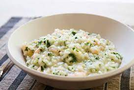

Risotto
Homepage

About:
Risotto is a northern Italian rice dish cooked with broth until it reaches a creamy consistency. The broth can be derived from meat, fish, or vegetables. Many types of risotto contain butter, onion, white wine, and parmesan cheese. It is one of the most common ways of cooking rice in Italy. Saffron was originally used for flavour and its signature yellow colour.
Ingredients:
- ½ pound bacon, diced
- 5 cups chicken stock
- 2 tablespoons butter
- ½ onion, diced
- 4 cloves garlic, minced
- 1 ½ cups Arborio rice
- 2 tablespoons butter
- ¼ cup grated Parmesan cheese
- Salt and black pepper to taste
Steps to follow:
- Cook and stir the diced bacon in a large skillet over medium heat until browned, about 10 minutes. Drain the bacon and reserve.
- Bring the chicken stock to a boil in a saucepan over high heat; reduce heat to low to keep the chicken stock hot.
- Heat 2 tablespoons butter in a large, heavy-bottomed saucepan over medium-high heat. Add the onion and garlic; cook and stir until the onion begins to turn golden brown at the edges, about 2 minutes. Pour in the rice and stir until the rice is coated in butter and has started to toast, 2 to 3 minutes. Reduce heat to medium; stir in one-third of the hot chicken stock and continue stirring until the rice has absorbed the liquid and turned creamy. Repeat this process twice more, stirring constantly. Stirring in the broth should take 15 to 20 minutes in all. When finished, the rice should be tender, yet slightly firm.
- Remove the risotto from the heat and stir in the remaining 2 tablespoons of butter, the Parmesan cheese, and the reserved bacon. Season to taste with salt and pepper before serving.
- Enjoy!